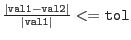

| description | C/C++ form | Fortran form |
| equal | == | .eq. |
| not equal | != | .ne. |
| less than | < | .lt. |
| less than or equal | <= | .le. |
| greater than | > | .gt. |
| greater than or equal | >= | .ge. |
| or | || | .or. |
| and | && | .and. |
| logical negation | ! | .not. |
| inclusion test | in (see below) | |
Operator precedences are as in C/C++ and parentheses may be used as necessary to group sub-expressions. Case is insignificant, i.e., .and., .AND., and .aNd. are all valid specifications for the logical and-operator. The C/C++ forms and Fortran forms can be mixed within a single expression.
In addition to the above operators, a limited set of boolean functions is available as well. These take a number of arguments and return either true or false. The following table lists the available boolean functions:
| function name | meaning | comment |
| ifthenelse(expr1, expr2, expr3) | if expr1 is true value of construct is value of expr2, otherwise value of expr3 | all three arguments must be boolean expressions |
| near(val1,val2,tol) | true if  | |
| point(...), line(...), | point-in-figure test | see below |
| gti(...), mask(...), region(...) | value-in-GTI/point in region tests | see below |
| selected() or selected | selection status test | see below |